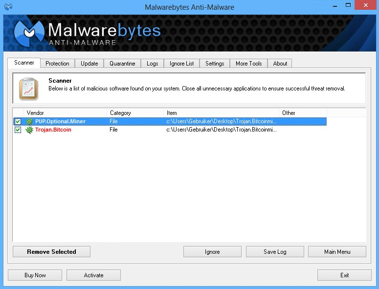

Когда троянская программа запускается на компьютере или устройстве, она может выполнять различные вредоносные действия без вашего согласия. Например, она может украсть ваши личные данные, включая пароли и финансовую информацию, или дать злоумышленнику удаленный доступ к вашему устройству.
Троянские программы могут распространяться через вредоносные вложения в электронных письмах, поддельные загрузки программ, небезопасные ссылки или даже через зараженные внешние носители, такие как USB-флешки.

Как защититься?
- Скачивайте программы только с официальных и надежных источников.
- Подключайте только доверенные и проверенные внешние устройства к вашему компьютеру.
- Убедитесь, что брандмауэр на вашем компьютере включен. Брандмауэр может помочь блокировать нежелательные соединения и защищать вашу систему от внешних атак.